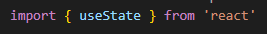
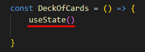
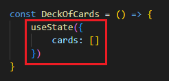
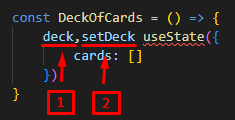
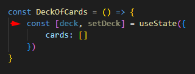
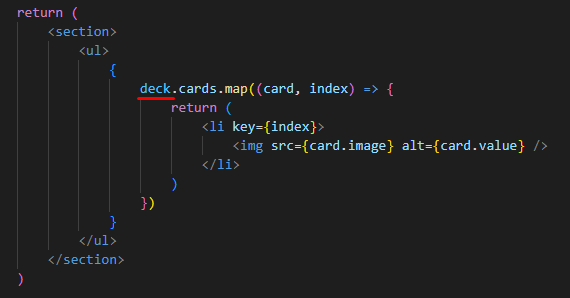

Hooks na Prática
Refatorando o componente de Class sem Hooks para um componente de Função com Hooks.
Definindo o estado inicial do componente:
- importando useState:

- chamando useState:

- aceita um valor inicial (no Class, era um objeto com um Array de cartas dentro):
- DEPOIS:

- quando o useState() é executado, ele retorna duas coisas:
1° a variável (que vamos popular com as cartas)
2° uma função responsável por atualizar essa variável

- o useState() retorna um Array de duas posiçõe, onde a primeira posição é a variável e a segunda posição é a função responsável por atualizar essa variável.
Fazendo uma atribuição via desestruturação, temos o seguinte código:

- retornando a parte visual do componente:

OBS: Note que, antes, "deck" era "this.state".